17 Pixels and sensors
Suggestions of all kinds for this book draft are welcome — whether it’s fixing small errors, raising bigger questions, or offering new perspectives. Please share comments through GitHub Issues. To make feedback easier to address, please point to the section you have in mind — by section number or a short snippet of text.
17.1 Pixels and sensors
This chapter connects the physics of photon-to-electron conversion (Chapter 16) to the engineering of image sensor pixels. In the previous chapter, we saw how absorbed photons generate mobile electron–hole pairs in silicon. Without an electric field, however, the liberated electrons and holes quickly recombine. In both CCD and CMOS sensors, an internal electric field—created by a reverse-biased diode junction or a biased gate electrode—separates the charges and collects the electrons in a potential well.
The defining challenge of an image sensor is not how electrons are created, but how that collected charge is transferred and read out across an array of millions of pixels.
The earliest digital image sensors, known as charge-coupled devices (CCD), were built using metal-oxide semiconductor technology (MOS). Measuring the electrons captured by the array of photodiodes in a CCD requires significant power, making them unsuitable for mobile devices and limiting their early adoption to scientific and other high-end applications. The earliest attempts to use CMOS sensors had relied on passive pixels (PPS), which suffered from high noise and slow readout.
A major breakthrough came in the early 1990s with the development of the modern Complementary Metal-Oxide Semiconductor (CMOS) active pixel sensor (APS) (Fossum 1993; Fossum et al. 1995). By placing an active amplifier in each pixel and incorporating on-chip timing, control, and analog-to-digital conversion, the JPL team demonstrated the “camera-on-a-chip.” Because CMOS sensors could be manufactured using standard microelectronics fabrication lines, they consumed far less power than CCDs and paved the way for the widespread adoption of electronic image sensors in mobile devices and many other applications.
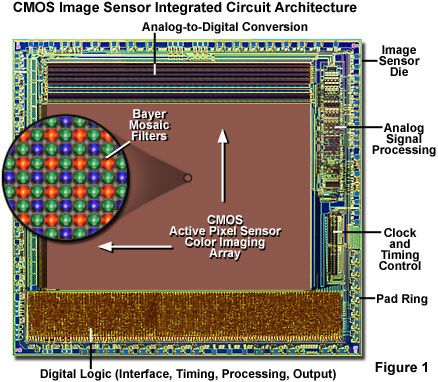
Finally, we review how pixel structures have evolved since the first implementation, from a front-side to back-side illumination, deep photodiodes, stacking, and digital pixels. These changes vastly improved sensitivity, speed, and dynamic range. In subsequent chapters, we see how additional on-sensor components—such as color filters and microlenses—shape the captured data (Chapter 19) and how to model and measure sensor performance (Section 21.1).
17.2 Two Readout Paradigms
Solid-state image sensors rely on two fundamentally different readout architectures:
- Charge transport (CCD): Charge packets are physically shifted across the silicon array step-by-step—like a bucket brigade—to a single corner amplifier.
- In-pixel amplification (CMOS): Each pixel converts charge to a voltage locally, and an addressable matrix of row and column wires reads out the voltages, much like digital random-access memory (RAM).
17.2.1 Charge Transfer: The CCD Bucket Brigade
Boyle and Smith’s invention of the CCD (Boyle and Smith (1970)) was a pivotal milestone: the principle of using the photoelectric effect to convert light into charge within semiconductor silicon remains the foundation of all solid-state imaging. A second, equally critical aspect of sensor design is how to measure the charge collected within the silicon substrate. The original Boyle and Smith design had no transistors inside the imaging area; the pixels were simply a sequence of MOS capacitors (metal or polysilicon gates over thin silicon dioxide on silicon). With this technology, it was not feasible to include amplifier circuits at each pixel. Instead, they devised an ingenious method—analogous to a bucket brigade—to move charge packets across the substrate without loss to a shared measuring circuit.
This method uses a coordinated, two-stage transfer process (Figure 17.2). Sets of gate electrodes are laid out across the silicon and driven by alternating voltages. Raising the voltage on an adjacent gate while lowering it on the current gate sequentially creates a traveling electrostatic potential well that sweeps electrons along. During readout, the entire two-dimensional array shifts its charge packets downward one row at a time into a specialized, high-speed serial readout register running along the bottom edge of the sensor. While the vertical array pauses, this serial register clocks the row of charge packets rapidly along the edge to the corner of the chip. There, each packet is transferred onto a tiny capacitor called the floating diffusion node. Dumping the electrons onto this capacitor produces a voltage drop that is proportional to the number of electrons (\(\Delta V = Q/C\)). A single, dedicated buffer amplifier senses this voltage and sends it to an analog-to-digital converter (ADC) to record the pixel’s digital value.
Precisely moving charge across large silicon wafers requires high clocking voltages (10–15 V), consumes substantial power, and is relatively slow. Implementing this approach requires specialized manufacturing lines that cannot integrate digital logic, clock generators, or ADCs on the same chip. Note 17.1 describes why moving and measuring the charge imposes a strong constraint on the precision of the movement if we hope to measure the signal accurately.
In a CCD, charge packets are shifted across the silicon array from pixel to pixel. For a high resolution image sensor, there will be many steps. Each step must be very high quality or the loss of image quality can be significant.
Consider a \(2048 \times 2048\) array. To read out the pixel in the corner furthest from the output amplifier, its charge packet must be shifted vertically down 2,048 rows, and then shifted horizontally across 2,048 columns in the serial readout register. In a typical 3-phase CCD design, this requires \(N \approx 4,000\) to \(12,000\) individual gate-to-gate transfers.
If the Charge Transfer Efficiency (CTE) per transfer is \(\eta\), the fraction of the original charge packet that successfully reaches the output amplifier after \(N\) transfers is:
\[ \text{Fraction arriving intact} = \eta^N \]
If \(\eta = 0.999\) (99.9%—a value that sounds remarkably good in most engineering contexts), the outcome across 4,000 transfers is disastrous:
\[ (0.999)^{4,000} \approx 0.018 \]
Only \(1.8\%\) of the electrons reach the output amplifier in the correct pixel; the remaining \(98.2\%\) are left behind in intermediate potential wells, creating a severe trailing smear across the image!
| CTE (\(\eta\)) | Description | Signal intact after 1,000 transfers | Signal intact after 4,000 transfers | Signal intact after 10,000 transfers |
|---|---|---|---|---|
| \(0.99\) | Two nines (99%) | \(\approx 0.004\%\) | \(\approx 0\%\) | \(0\%\) |
| \(0.999\) | Three nines (99.9%) | \(36.8\%\) | \(1.8\%\) | \(\approx 0.005\%\) |
| \(0.9999\) | Four nines (99.99%) | \(90.5\%\) | \(67.0\%\) | \(36.8\%\) |
| \(0.99999\) | Five nines (99.999%) | \(99.0\%\) | \(96.1\%\) | \(90.5\%\) |
| \(0.999999\) | Six nines (99.9999%) | \(99.9\%\) | \(99.6\%\) | \(99.0\%\) |
To keep trailing smear below \(1\%\), scientific and astronomical CCDs require “six nines” of efficiency (\(\eta \ge 0.999999\)).
To achieve this level of perfection, electrons cannot rely on slow thermal diffusion to drift out of the potential wells; they must be rapidly swept across each gate by strong lateral electric fields. Creating these steep “potential cliffs” deep inside the silicon requires large clock voltage swings (typically 10–15 V), which is the direct source of the CCD’s high dynamic power consumption and specialized manufacturing requirements.
17.2.2 In-Pixel Amplification: The CMOS Active Pixel Sensor
In the 1970s and 1980s, the limitations of unipolar MOS technologies (NMOS and PMOS) became evident: they drew significant static power and suffered from thermal regulation problems as circuit density scaled up. The massive demand for semiconductor memory drove the electronics industry toward CMOS (Complementary MOS), which drew far less power and was much easier to keep cool. Microprocessors shifted soon after.
The earliest experiments with CMOS imagers used Passive Pixel Sensors (PPS). In a passive pixel, each photodiode was simply connected to a column bus through a single transistor switch. Reading the pixel dumped its tiny charge packet directly onto a long, high-capacitance column bus, severely attenuating the signal and drowning it in noise. In his lectures on this topic, my Stanford colleague Abbas El Gamal would refer to dumping charge onto such a line as an “unnatural act”: who would pour a few thousand electrons onto a long wire and hope that they would dribble intact to the other end?
What enabled the breakthrough to practical CMOS sensors? By the early 1990s, CMOS feature sizes shrank below \(0.5\,\mu\text{m}\), meaning transistors were finally tiny enough to fit inside each pixel without occupying too much light-sensitive area (maintaining an acceptable fill factor). At NASA’s Jet Propulsion Laboratory (JPL), Eric Fossum recognized that CCDs were trapped on expensive, specialized fab lines that could not integrate digital logic or support circuits, requiring cumbersome multi-chip camera boards with external clock drivers, multiple voltage regulators, and external ADCs. Fossum realized1 that by placing a buffer amplifier (a source-follower transistor) inside each pixel—creating the Active Pixel Sensor (APS)—charge could be converted to a voltage locally within the pixel. That voltage could then drive the high-capacitance column line with negligible signal loss. This eliminated the 15 V bucket brigade altogether and made it possible to build an entire “camera-on-a-chip” on high-volume, low-voltage commercial CMOS lines (Fossum 1993).
17.2.3 CMOS pixel circuitry
Figure 17.4 includes two coarse schematics of pixels from early CMOS imagers. Each gives you a sense of the complexity of the early pixel designs as well as their shortcoming. Click on each of the tabs to see the two schematics.
In the first generation of image sensors the distance from the microlens at the top to the photodiode at the bottom was fairly large compared to the size of the photodiode. In these early pixels, light from the main lens had to travel through what was effectively a tunnel to reach the photodiode.
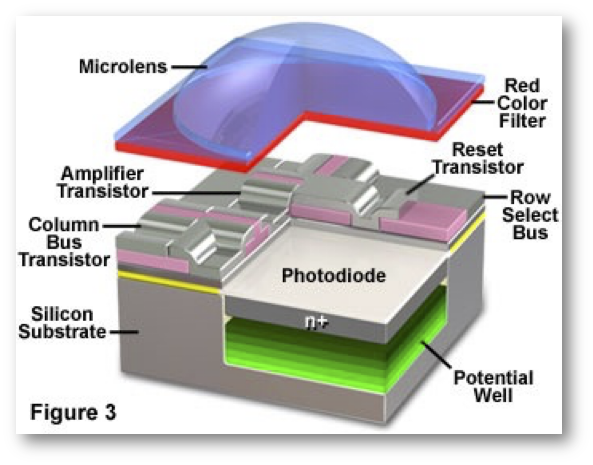
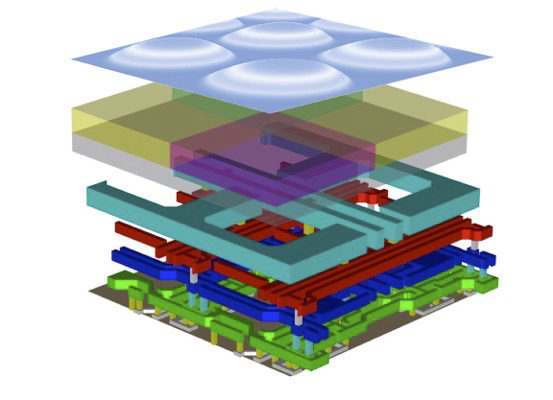
Pixel architecture has evolved significantly over the years, and there continue to be many novel designs. The most straightforward change is that technology has scaled, enabling pixel sizes to shrink and thus increasing spatial sampling resolution. In addition, the placement of the circuitry and metal lines has changed to below the photodiode; light no longer passes through a deep tunnel. There are other improvements to the circuitry, some experimental, that we will review later in Chapter 22.
It is helpful to first understand the concepts behind the classic circuitry, so that we can better appreciate these innovations. The logical flow of the circuitry is as follows:
- Before image capture, the sensor circuitry resets each pixel, clearing residual charge from previous exposures.
- During image acquisition, the photodiode array collects electrons generated by incoming light; these electrons are stored within the photodiode (3T) or in a nearby capacitor (4T).
- During readout, the circuitry transfers the stored charge to an analog-to-digital converter (ADC).
- The digital image array records the amount of light captured by each pixel.
The role of the other essential pixel components, the color filter arrays and microlenses, is explained in Section Chapter 19. I describe how to calibrate and model sensor performance, from the scene light field to image capture in Section 21.1.
17.2.4 Three-Transistor (3T) Pixel Design
The original CMOS pixel design uses a three-transistor (3T) circuit to store and read out the charge collected by the photodiode (Figure 17.5). Each pixel contains three key transistors: \(M_{rst}\) (reset), \(M_{sel}\) (select), and \(M_{sf}\) (source follower). The \(M_{rst}\) transistor resets the photodiode by connecting it to the supply voltage (Vdd), clearing any residual charge before image capture. The \(M_{sel}\) transistor selects a specific row of pixels, connecting them to the column lines. The \(M_{sf}\) transistor acts as a buffer, driving the pixel voltage onto the column readout line for measurement by an analog-to-digital converter (ADC), as described below in Section 17.3.
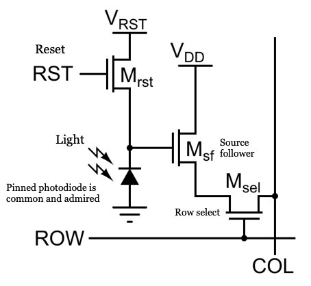
Ideally, the photodiode’s response to light is linear, with the number of generated electrons following Poisson statistics. However, the surrounding circuitry introduces additional sources of noise and nonlinearity. For example, the storage capacitor has a limited capacity, so it can saturate at high light levels. The transistors used for readout can also introduce noise and small nonlinearities. Furthermore, variations in pixel properties across the sensor array can cause fixed-pattern noise. In modern CMOS sensors, these nonlinearities and noise sources are typically small—on the order of a few percent (Wang and Theuwissen 2017) -but they can still affect image quality. Careful characterization and calibration are necessary to minimize these effects and produce high-quality images.
17.2.5 Four-Transistor (4T) pixel design
When 3T CMOS sensors first appeared in the 1990s, CCD proponents called them noisy toys (“CCD dinosaurs vs. CMOS fleas”). 3T pixels suffered from high dark current and reset noise because reading the voltage required resetting the photodiode, leaving no uncorrupted reference state2.
The breakthrough that allowed CMOS to match and eventually exceed CCD image quality came from adopting a technology originally invented for CCDs! In 1980, Nobukazu Teranishi and colleagues at NEC invented the pinned photodiode (PPD) for interline-transfer CCDs to eliminate image lag and dark current (Teranishi et al. 1982; Burkey et al. 1984; Fossum and Hondongwa 2014). By burying the p-n junction beneath a pinned surface layer, the PPD shielded photoelectrons from the defects and thermal generation typical of the silicon surface.
In the mid-1990s, teams at Kodak and JPL integrated the pinned photodiode and an additional transfer gate (TX) transistor into the active pixel, creating the four-transistor (4T) pixel (Lee et al. 1995, 1997; Guidash et al. 1997). In this design (Figure 17.6), the photodiode is decoupled from the readout circuitry by the transfer gate. Photoelectrons accumulate in the pinned photodiode during exposure, and are then transferred completely to an isolated sensing capacitor called the floating diffusion node (with capacitance \(C_{fd}\)).
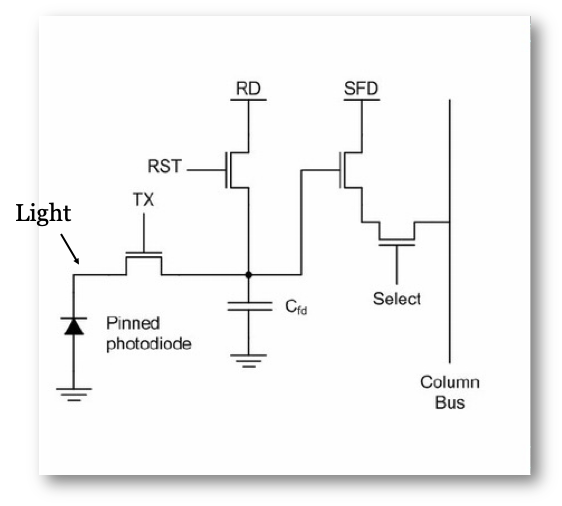
Separating charge collection from the readout node is what makes true Correlated Double Sampling (CDS) possible:
- The floating diffusion node is reset, and its reset voltage is read first.
- The transfer gate pulses open, transferring the collected charge packet onto the floating diffusion.
- The new signal voltage is read second.
Subtracting the reset voltage from the signal voltage eliminates \(kTC\) reset noise entirely (Section 18.6.1), while the pinned structure drastically lowers dark current (Section 18.6.2). The other circuit elements—the reset, row select, and source follower transistors—remain the same as in the 3T design.
Today, the 4T pixel is the standard in almost all high-performance CMOS image sensors, including those found in smartphones, industrial cameras, cars, and scientific instruments (Fossum and Hondongwa 2014; Fossum et al. 2024).
17.3 Multiplex readout
In-pixel buffer amplifiers (source followers) solved the challenge of driving charge out of the pixel without noise-corrupting attenuation. The second major architectural challenge was reading out signals across the sensor array. In a classic CCD, charge packets are physically shifted across the entire silicon array to a single output amplifier and ADC at the corner (Section 17.2.1). In CMOS sensors, the photoelectrons in each pixel are converted to voltages that drive an addressable matrix of parallel output lines. How do we convert the analog voltages on all of these separate lines into digital values?
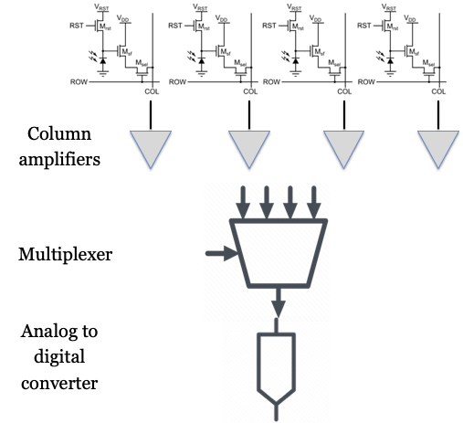
The readout process begins when a row-select control signal activates a specific row of pixels, placing the voltage from each pixel in that row onto its corresponding vertical column readout line. These column lines are connected to column amplifiers, which buffer and amplify the signals to ensure accurate transmission. The analog gain of these amplifiers is often adjustable (typically from 1× to 4× or higher), which is how ISO sensitivity adjustments are implemented in hardware prior to quantization.
These amplified signals are then passed to an analog-to-digital converter (ADC). The architecture for digitizing these signals has evolved through three distinct stages:
- Multiplexed ADCs (Early CMOS): In early CMOS sensors, fabrication constraints made ADCs relatively large and power-hungry. To save silicon area, ADCs were shared among groups of columns (Figure 17.7). An analog switch sequentially connected the ADC to each column in its group (typically 8, 16, or 32 columns)—a process called multiplexing. Once all columns in the active row were digitized, the readout circuitry moved to the next row.
- Column-Parallel ADCs (Modern Planar CMOS): As process technologies scaled, engineers shrank ADC circuitry enough to place a dedicated converter at the pitch of every column. Having thousands of converters operating in parallel means each ADC can run at a much slower sampling rate and lower noise bandwidth, while dramatically boosting the total frame rate. Today, column-parallel ADCs are standard in commercial CMOS sensors.
- Pixel-Parallel ADCs (3D Stacked Sensors): In the future—and increasingly in the present—we are seeing the return of the idea where every individual pixel has its own ADC, as in the Digital Pixel Sensor (Section 17.8). With 3D wafer stacking, pixel-parallel digitization has become commercially viable, achieving massive parallel readout without sacrificing light sensitivity. Engineering advances march on, remarkably to me.
Because the rows of the sensor are addressed and read out sequentially, the exposure duration of each row begins and ends at slightly different times. This sequential row-by-row timing, known as a rolling shutter, and its alternative, the global shutter, are analyzed in detail in Section 20.4.
17.4 Sensor evolution
There has been a large engineering effort to reduce various sources of noise, including temporal and fixed pattern noise, as well as other limitations in the sensor design relating to color and dynamic range. The engineering effort was supported by the enormous demand for CMOS sensors. In 2020, approximately 6.5 billion sensors were shipped. In 2025, we expect about 13 billion sensors to be produced. That’s a lot of sensors and the demand motivates a lot of engineering. This section covers the evolution of the pixel and sensor design.
The sensor architecture I have described is known as front-side illumination (FSI). The architecture has the obvious challenge of placing multiple metal layers above the semiconductor substrate (Figure 17.4 (b)). Even at the time of the original implementation, it was clear that requiring light to pass through the metal layers to reach the light-sensitive photodiode created many problems.
Additionally, both the photodiodes and their associated circuitry share the same substrate. Requiring the circuitry and photodiode to share space reduced the sensitivity of the sensor. Finally, the original pixels were fairly large, \(6 \mu \text{m}\) or more. As technology scaled and pixels became smaller -many CMOS imagers have pixels as small as \(0.8 \mu \text{m}\) and a reduction in area of \(50x\)- additional problems arose. Different opportunities arose as well.
These challenges, and the huge success of CMOS sensors, were met by a massive, world-wide, engineering effort to improve the system. The evolution of image sensor pixel technology that came from this effort enabled dramatic improvements in image quality, sensitivity, and device functionality. The following sections describe the key milestones that were achieved through academic and industry partnerships. For an authoritative review, consult Oike (2022).
Here is a timeline for the key milestones described in the sections below.
| Technology | Commercialization | Key Benefit |
|---|---|---|
| Front-Side Illumination (FSI) | 1990s–2000s | Simplicity, but limited by wiring obstruction |
| Back-Side Illumination (BSI) | ~2007–2010 | Higher QE, better low-light, smaller pixels |
| Deep Trench Isolation (DTI) | ~2010s | Reduced crosstalk, higher pixel density |
| Deep Photodiode | ~2015+ | Higher sensitivity, dynamic range |
| Stacked Sensor | ~2015+ | Advanced features, compact design |
17.5 Back-side illuminated (BSI)
After years of incremental improvements, engineers developed a new architecture to overcome the limitations of front-side illuminated (FSI) sensors. The resulting design, known as Back-Side illuminated (BSI) CMOS, rearranges the device layers to improve sensitivity. In BSI sensors, the photodiode and wiring layers are flipped; the light no longer needs to pass through the wires.
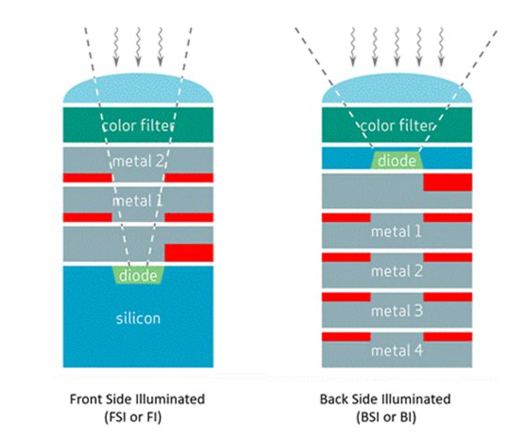
In addition to flipping the order of the silicon and wires, it was necessary to change the thickness of the substrate (Figure 17.8). In the FSI pixel, the photodiode is embedded in a relatively thick layer of silicon. Flipping this structure would require the light to pass through a substantial amount of silicon prior to reaching the photodiode. This is problematic because the silicon absorbs light, and particularly short-wavelength light (Section 19.3). Thus, it was necessary to find a way to thin the silicon substrate and still have a working photodiode and circuitry.
The concept of back-side illumination (BSI) was first developed decades earlier for specialized charge-coupled devices (CCDs) used in astronomy and space missions, where incoming light struck the thinned backside of the silicon substrate unobstructed by surface gate electrodes. Bringing BSI to commercial CMOS image sensors, however, required solving formidable manufacturing challenges: the silicon wafer had to be thinned to only a few micrometers and its back surface carefully passivated to prevent catastrophic dark current and pixel crosstalk.
After more than a decade of process development across the semiconductor industry, OmniVision Technologies (working with TSMC) introduced one of the first commercial BSI CMOS sensors (the OV8810) in 2008. Sony followed closely in 2009 with its widely adopted “Exmor R” sensors, which firmly established BSI as the standard architecture for high-performance consumer and smartphone cameras. See more in this Wikipedia article on BSI.
Here is an SEM cross section of an early BSI sensor from Sony. You can see the photodetector (PD) is close to the microlens array level without all the intervening metal layers.
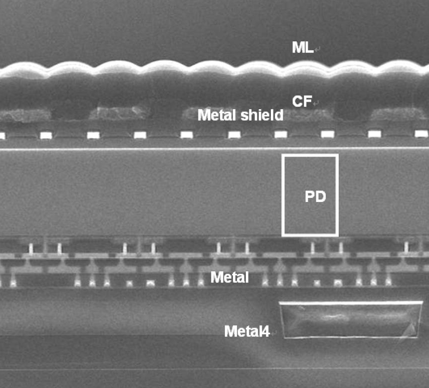
17.6 Deep photodiodes
Figure 17.10 illustrates a further improvement in the BSI design. SK Hynix, Omnivision and other manufacturers recognized that simply flipping the sensor (BSI) improved light capture. But as pixel sizes continued to shrink there was relatively little ability to store electrons. Thus the well capacity was reduced which limited the pixel’s dynamic range (Section 18.3). Moreover, the sensitivity to longer wavelengths, which penetrates deeper into silicon, became a challenge (Section 19.3).
To overcome these limitations, many vendors invented methods to build photodiodes that extend significantly deeper into the silicon (deep photodiode technology). Increasing the volume of the photodiode has two benefits. First, the photodiode can gather more charge before saturating. Second, the photodiode has higher long-wavelength sensitivity.
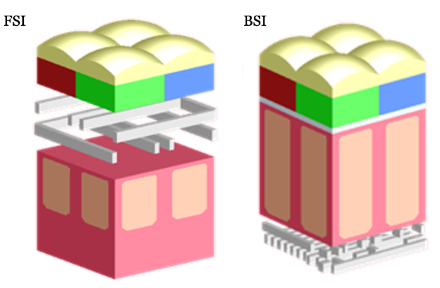
17.7 Stacked sensors
In the original planar technology, photodiodes are adjacent to the transistor circuits within the silicon substrate. Thus, photodiodes must compete for space with the transistors. Reducing the photodiode area means less light efficiency; reducing the transistor size means noisier performance. Youse pays yer money and yer makes yer choice.
The stacked sensor architecture overcomes this limitation by physically separating the photodiode layer from the readout and processing circuitry. In a stacked sensor, the photodiodes occupy one silicon layer, while the supporting electronics are fabricated on a separate layer beneath. This structure maximizes the light-sensitive area (fill factor) for each pixel and enables the use of more advanced, lower-noise circuitry without sacrificing pixel size.
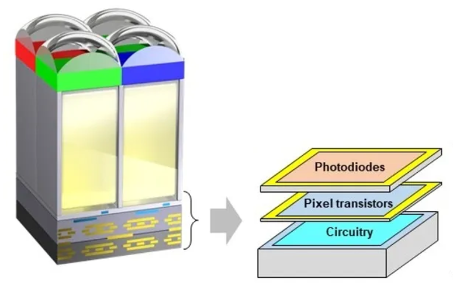
The key enabling technology is called die stacking. The silicon layers are bonded together and electrically connected using two main methods. The original approach used Through-Silicon Vias (TSVs)—tiny holes etched through the silicon and filled with a conductive material (such as copper or tungsten) to create vertical electrical connections.
More recently, Cu-Cu (copper-to-copper) direct bonding has become common. In this method, patterned copper pads on each wafer are precisely aligned and bonded under heat and pressure, allowing for dense, fine-pitch interconnects between the pixel and logic layers. Cu-Cu bonding is ideal for high-resolution, high-speed sensors, enabling features like per-pixel memory used for global shutters which are sold by many companies. TSVs are still used for tasks such as power delivery and global I/O routing.
Stacked sensors have unlocked new capabilities in image sensor design. By separating the photodiode and circuitry layers, manufacturers can improve light sensitivity, reduce noise, and add advanced processing features directly beneath the pixel array. This architecture forms the foundation for ongoing innovation in sensor performance and functionality.
Stacked CMOS sensors build on the BSI CMOS architecture by integrating the pixel array with a separate logic layer. This close integration enables advanced features such as high dynamic range (HDR) imaging, faster frame rates, and on-chip processing—including artificial intelligence (AI) functions.
Some stacked sensors incorporate high-speed DRAM directly beneath the pixel array, allowing for rapid data readout and temporary storage. This architecture made possible innovations like the Sony a9 (2019), which could capture images at 20 frames per second (fps) with a continuous, blackout-free viewfinder experience.
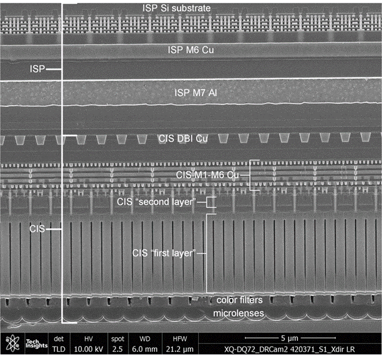
The complexity of the silicon and the multiple functions achieved by these stacked sensors is very impressive; it reminds me of the complexity of the retina. Many important functions for image systems are integrated into these sensing devices, and these functions are typically localized in space. Many other functions are carried out in the central processing units which have access to the image across larger regions of the visual field.
17.8 Digital pixel sensor
The Digital Pixel Sensor (DPS) was a significant parallel development in image sensor technology. The initial ideas were presented in the mid-1990s, at roughly the same time the 3T and 4T active pixel sensor (APS) circuits were being introduced.
The standard APS architecture routes analog signals from each pixel down a shared column line to an analog-to-digital converter (ADC) located at the edge of the array. The DPS architecture approached the problem differently by placing an ADC within, or directly adjacent to, each pixel (Fowler and El 1995; Udoy et al. 2025).
A key capability of the DPS architecture was non-destructive, repeated readout of pixel voltage during an exposure (e.g., at 1 ms, 2 ms, 4 ms, and so forth). Rather than integrating for a single fixed duration, the sensor could sample the accumulating charge at multiple times: * Pixels in bright regions crossed a preset voltage threshold quickly and were read out early to avoid saturation. * Pixels in dark regions continued integrating for the full exposure duration to maximize signal-to-noise ratio.
The output from each pixel was both the digitized voltage and the timestamp at which that measurement was taken. This effectively provided each pixel with its own autonomous exposure duration — creating a space-varying exposure across the array. Digitizing at the pixel level also enabled massively parallel readout and true global shutter operation without motion distortion (Kleinfelder et al. 2001; Wandell et al. 2002; El Gamal and Eltoukhy 2005). We explain the value of this approach for high dynamic range imaging in Section 20.3.
When first introduced, DPS faced significant practical hurdles. In traditional planar silicon, placing an ADC and memory inside each pixel consumed valuable surface area that would otherwise collect light, severely degrading the fill factor. As Fossum et al. (2024) summarize in their review of image sensor evolution, image sensors evolved from chip-level ADCs to column-parallel ADCs, which became the commercial standard because they struck the optimal balance between speed and fill factor in 2D planar silicon.
Over the past decade, however, 3D stacked sensor technology has revitalized the DPS architecture. By separating the photodiode from the readout circuitry across vertically stacked silicon layers connected by dense Cu-Cu hybrid bonds (Section 17.7), pixel-parallel ADCs and digital memory can now reside directly beneath the photodiode without penalizing fill factor. On-chip ADCs are now ubiquitous, and pixel-parallel digitization is rapidly moving to the forefront of high-speed and scientific imaging.
El Gamal co-founded Pixim, Inc. in 1998, a fabless semiconductor company that commercialized chipsets for security cameras based on DPS technology. While early planar implementations had higher fabrication costs and reduced fill factors that limited consumer adoption, Pixim established the viability of in-pixel ADC processing. Pixim was acquired by Sony Electronics in 2012.
In 2023, Sony introduced the Sony α9 III, featuring a 24.6 Megapixel full-frame sensor with a global shutter capable of capturing full-resolution images at 120 frames per second. Sony achieved this breakthrough by deploying a 2-layer stacked CMOS architecture with a pixel-parallel ADC array connected via Cu-Cu direct bonding — bringing the digital pixel sensor architecture into flagship commercial cameras.
Yusuke Oike, who was a visiting scholar in the El Gamal group from 2010–2012, was the project manager and lead architect for the sensor technology at the core of the α9 III. He has spent decades leading CMOS image sensor research at Sony Corporation and Sony Semiconductor Solutions, serving as Senior General Manager of the Research Division and appointed CTO of Sony Semiconductor Solutions in 2025.
My friend Ted Adelson visited me in the early 2000s when I was working with Abbas El Gamal. I was explaining to Ted—who is a vision scientist and psychologist—the logic of passive pixel sensors in anticipation of an “aha” moment when I revealed Fossum’s active pixel idea. As I finished describing the PPS, Ted just looked at me quizzically and said: “Why not put an amplifier in the pixel?” There must be a moral in this story somewhere.↩︎
Abbas may not remember it this way, but I have a clear memory of seeking funding for the Stanford project over several meetings, typically a bad chicken lunch, and being told that CMOS would never overtake CCD.↩︎